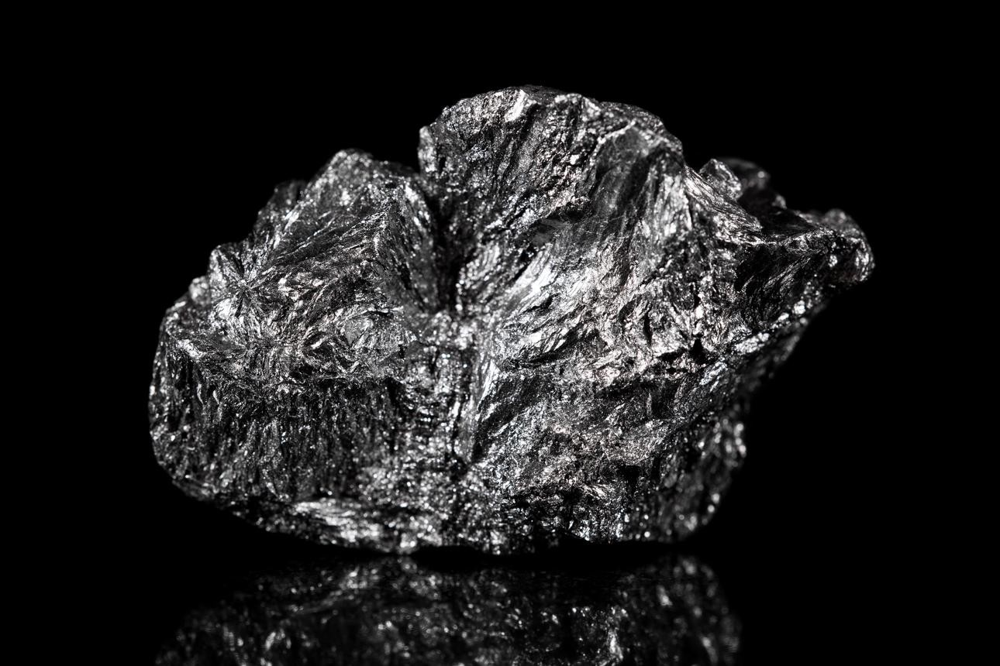
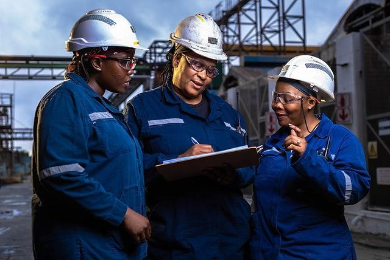

Industrial
value addition
Explore a route from suitable graphite feedstock to products that meet industrial requirements.
We are a development-stage enterprise evaluating a proposed graphite processing and value-addition project in Mpwapwa, Dodoma, Tanzania.

Our proposed development brings together industrial value addition, technical evaluation and purposeful collaboration.
Explore a route from suitable graphite feedstock to products that meet industrial requirements.
Let feedstock testing, feasibility and market evaluation guide the scope of the project.
Connect with expertise, technology and investment experience relevant to project development.

Graphite Industries Limited is developing a graphite-focused processing and value-addition business in Tanzania.
Our proposed project in Mpwapwa, Dodoma, is intended to assess how suitable graphite feedstock could be transformed into materials for industrial markets.
Domestic processing could create opportunities for skills, local participation and greater industrial value. Technical studies, customer requirements, feasibility and appropriate partnerships will shape how we move forward.
To become a recognised Tanzanian graphite processing facility and value-addition enterprise connecting mineral resources with regional and global industrial markets.
To develop competitive graphite processing capabilities through responsible resource development, appropriate technologies, strategic partnerships, quality-focused operations and continuous improvement.
We intend to advance in phases, with the scope of development guided by what technical and commercial evaluation demonstrates.
Verify feedstock suitability and assess mineral characteristics, processing response and infrastructure requirements before defining the facility.
Understand prospective customer requirements. Assess product pathways through testing, technical evaluation and consultation with potential buyers.
Seek appropriate technology, engineering, research and investment expertise, with each next step dependent on feasibility and project decisions.
Our intended approach centres on reliable information, clear responsibilities, appropriate due diligence and oversight of project risks. Governance arrangements and organisational capabilities are to develop alongside the project.
Environmental assessment, worker safety, community engagement and responsible sourcing are intended to inform development decisions. Specific commitments and performance claims must be supported by verified information.
Introduce your organisation and the type of engagement you have in mind. Ask about the current project scope, available supporting information and potential next steps.